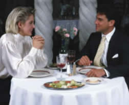

Café Fontenebleau welcomes you
Café Fontenebleau's visionary chef leads the way in a culinary revolution. Proclaimed by many to be the best chef in the world today, Chef Fontenelle blends earthy seasonal flavors and bold ingredients to create exquisite contemporary cuisine.
The name Café Fontenebleau comes from our first restaurant, located in a historic building on Thouiu Street in Paris, where we opened the doors in 1985. We've replicated the elegant interior, exceptional service, and world-class cuisine in our restaurants around the country.
Come dine with us tonight
Café Fontenebleau features a magical combination of excellent cuisine and musical entertainment. The finest pasta, seafood, veal and certified Angus steaks are served to you by the most talented waiters anywhere. Nightly entertainment features favorites from Broadway musical theatre, Grand Opera, and Neapolitan folk songs performed by our talented musical staff. Café Fontenebleau offers the largest selection of Italian wines in California, and is the proud recipient of numerous awards from Wine Tasting Magazine. We were selected as one of Paris Magazine's top 200 restaurants for the last 8 years!
Café Fontenebleau restaurant is music to your ears, be it an intimate dinner for 2 or a banquet for up to 200.